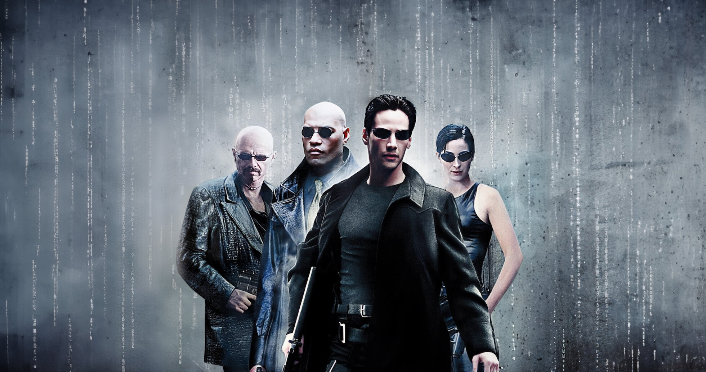

Matrix é um filme de ficção científica lançado em 1999, dirigido pelas irmãs Wachowski. O filme segue a história de Neo, um hacker que descobre que a realidade em que vive é uma simulação criada por máquinas para controlar a humanidade. Com a ajuda de Morpheus e Trinity, Neo luta contra as máquinas e descobre seu verdadeiro potencial como o "Escolhido". O filme é conhecido por seus efeitos especiais inovadores e sua filosofia profunda sobre a natureza da realidade.
